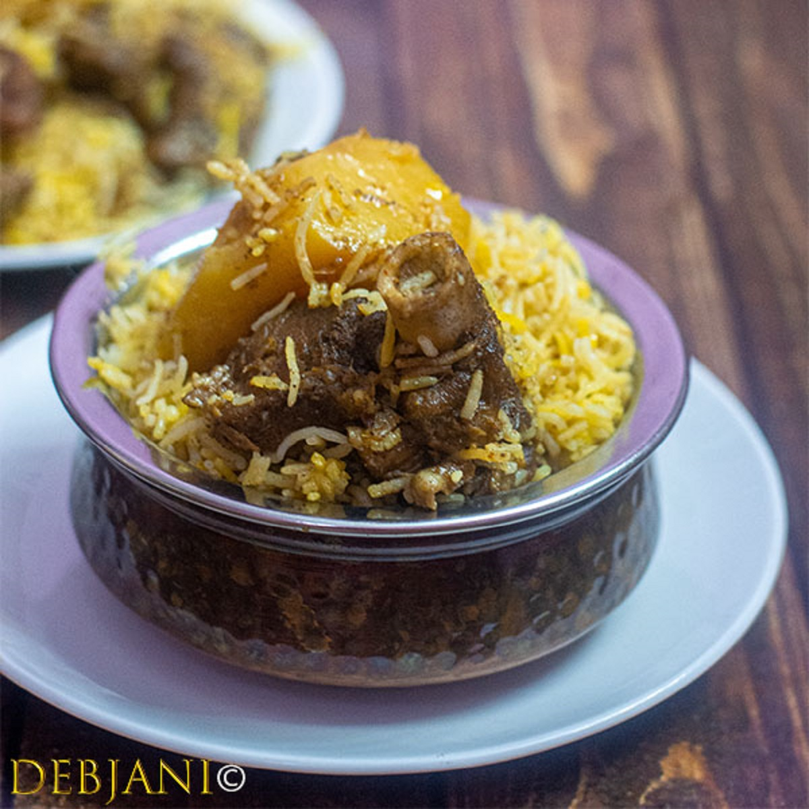

Beef Biryani

Once the dish reached India, it blossomed into something entirely new. The story goes that Mumtaz Mahal, a Queen of Shah Jahan, visited an army barrack and found the soldiers there to be heavily undernourished.
Back To Home/Restaurants